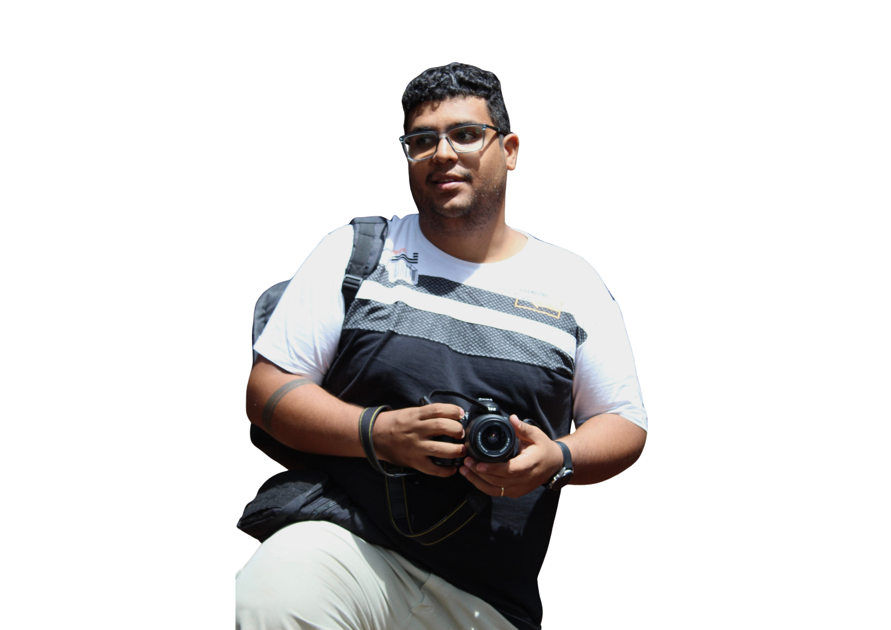

PRAZER, RICARDO.
Sobre Mim.
Olá! Me chamo Ricardo, tenho 31 anos e sou leonino — para quem acredita nessas coisas!
Sou uma pessoa extrovertida, dedicada e curiosa. Sempre gostei de aprender coisas novas, principalmente quando envolvem tecnologia e criatividade.
Minha história com a tecnologia começou cedo, aos 12 anos, quando passei a desmontar e montar computadores antigos. Entre peças, cabos e muita curiosidade, fui descobrindo como tudo funcionava e adquirindo meus primeiros conhecimentos sobre hardware.
Com o tempo, essa curiosidade me levou para o mundo da edição de vídeos e imagens. Trabalhei como editor para canais do YouTube, em uma época em que o Sony Vegas fazia parte da minha rotina. Foi ali que descobri uma nova paixão: o audiovisual.
Comecei a me aprofundar em filmagens, produção de conteúdo e equipamentos de áudio, aprendendo a operar mesas de som analógicas e digitais. Essas experiências abriram portas para oportunidades incríveis, incluindo minha participação em eventos corporativos de organizações como Embrapa, Meditrop, BBDW e Sobracil.
Mais tarde, encontrei na fotografia outra forma de expressar minha criatividade. O que começou como uma paixão se tornou minha profissão durante um bom período, permitindo que eu transformasse momentos e histórias em imagens.
Mas, mesmo explorando diferentes áreas, algo sempre esteve presente: minha vontade de criar. Seja editando um vídeo, tratando uma fotografia ou desenvolvendo um projeto visual, sempre gostei de transformar ideias em algo concreto.
Foi essa combinação de criatividade, curiosidade e facilidade com a tecnologia que me levou à área de Tecnologia da Informação. Hoje, estou descobrindo na programação uma nova maneira de dar vida às minhas ideias.
E este site representa muito bem essa trajetória.
Embora tenha surgido como um trabalho acadêmico, decidi ir além do que foi solicitado. Quis desenvolver um portfólio que realmente tivesse a minha identidade, com cada detalhe pensado da maneira que eu gostaria.
Talvez porque, durante muito tempo, eu tenha imaginado como seria incrível criar meu próprio site, mesmo sem saber por onde começar.
Hoje, olhar para este projeto e perceber que fui capaz de construí-lo é uma conquista muito especial.
E quer saber? Se tem uma coisa que posso dizer com toda certeza é que me apaixonei pela programação.
Essa é só mais uma etapa da minha história. E, com certeza, ainda tenho muita coisa para aprender, criar e compartilhar.